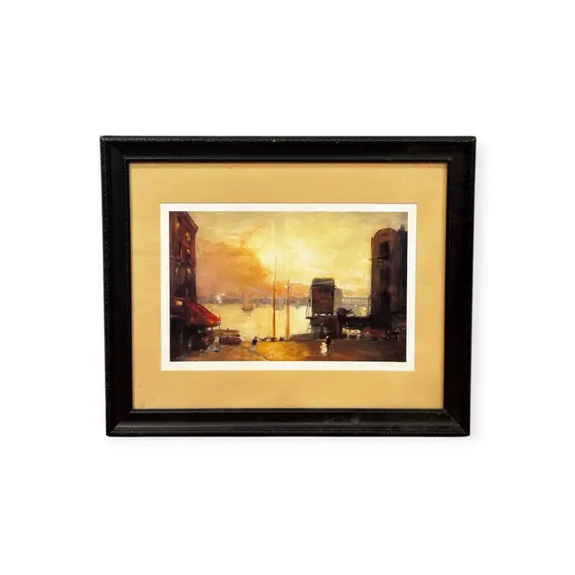
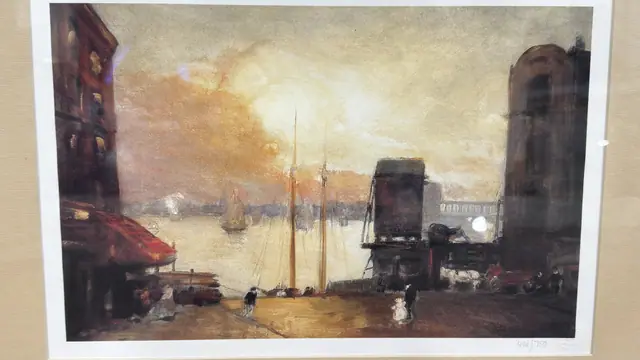
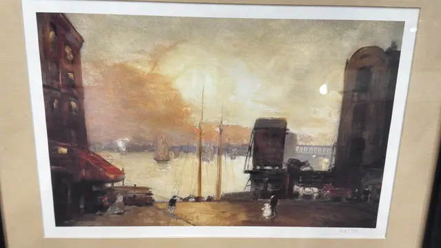
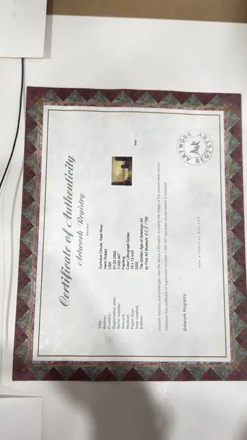
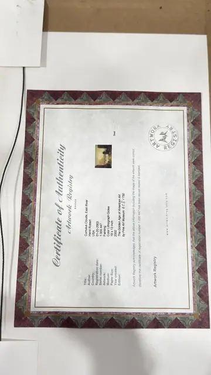

Paintings & Prints
Cumulus Clouds East River, Henri Robert Giclee, Numbered Edition, Framed, 2002
Henri Robert · created 2002, after an earlier American impressionist manner
Price Upon Request





About the Item
Henri Robert. A golden, atmospheric harbour view: a broad sunlit sky of cumulus burns behind the masts of moored schooners, and the water catches a long band of light. Dark warehouse blocks frame the composition at left and right, a covered ferry shed sits at centre right with a lit lamp, and small dark figures, a hansom and barrels animate the wet quayside. The handling is loose and tonal, all amber, sepia and smoky violet-grey with a few red accents on the awnings. Medium: colour lithograph giclee on paper. Edition: 408/750; "The Golden Age of American Art by Fine Art Museum 408/750". Accompanied by a certificate: Certificate of Authenticity from Artwork Registry, registered 01-20-2003, serial 1.000.447, describing a color lithograph giclee, paper 19 x 13 in, edition 408/750. Inscribed on the reverse or mount: 408/750 (pencil, lower right margin); embossed blind stamp at the far lower right of the sheet; Certificate of Authenticity / Artwork Registry , Title: Cumulus Clouds, East River / Author: Henri Robert / Country: USA / Registration date: 01-20-2003 / Serial number: 1.000.447 / Artwork: Painting / Medium: Color Lithograph Giclee / Paper Size: 19 x 13 inch / Year created: 2002 / Edition: The Golden Age of American Art by Fine Art Museum 408/750; Artwork Registry acknowledges that the above information including the image of the artwork were correct; therefore this certificate of registration including registration number 1.000.447 has been issued sealed & stamped , www.artworkregistry.com. Condition: No visible damage; the sheet is clean with full margins. Lamp reflections and a faint pink flare on the glass in the photographs.
Details
- Creator:
- Henri Robert
- Creation Year:
- created 2002, after an earlier American impressionist manner
- Dimensions:
- Height: 19.5 in (49.53 cm)
Width: 23.0 in (58.42 cm)
outside of frame - Medium:
- colour lithograph giclee on paper
- Edition:
- 408/750; "The Golden Age of American Art by Fine Art Museum 408/750"
- Period:
- 21St
- Condition:
- Offered in the condition shown in the photographs.
- Reference Number:
- VO-215
- Documentation:
- Certificate of Authenticity from Artwork Registry, registered 01-20-2003, serial 1.000.447, describing a color lithograph giclee, paper 19 x 13 in, edition 408/750.
- Gallery Location:
- 408/750 (pencil, lower right margin); embossed blind stamp at the far lower right of the sheet; Certificate of Authenticity / Artwork Registry , Title: Cumulus Clouds, East River / Author: Henri Robert / Country: USA / Registration date: 01-20-2003 / Serial number: 1.000.447 / Artwork: Painting / Medium: Color Lithograph Giclee / Paper Size: 19 x 13 inch / Year created: 2002 / Edition: The Golden Age of American Art by Fine Art Museum 408/750